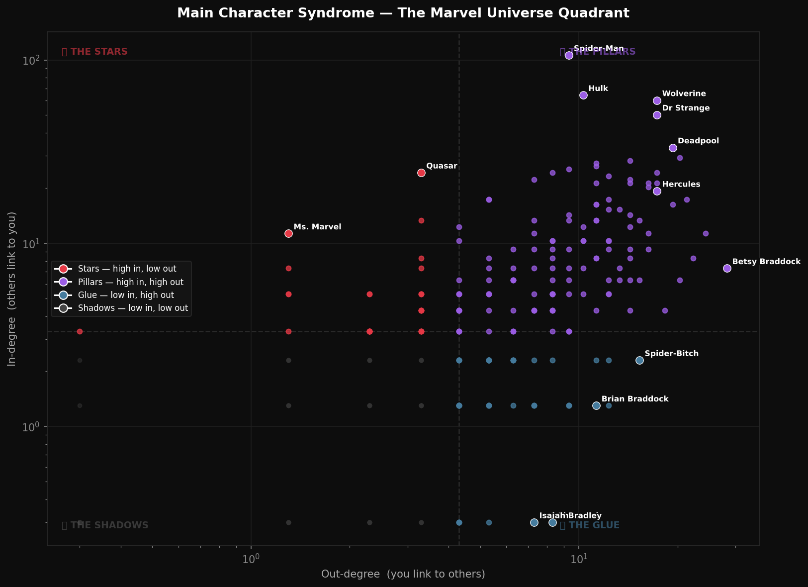
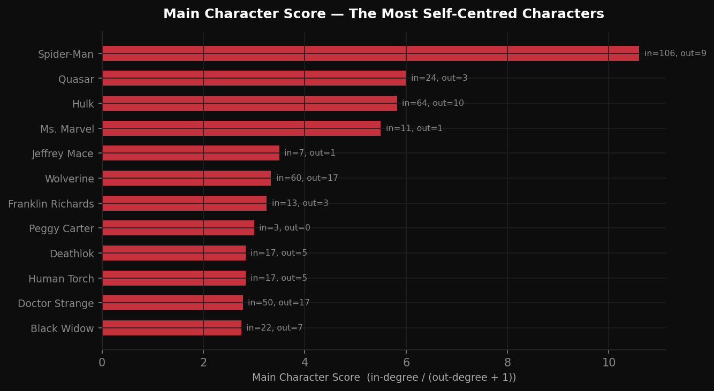
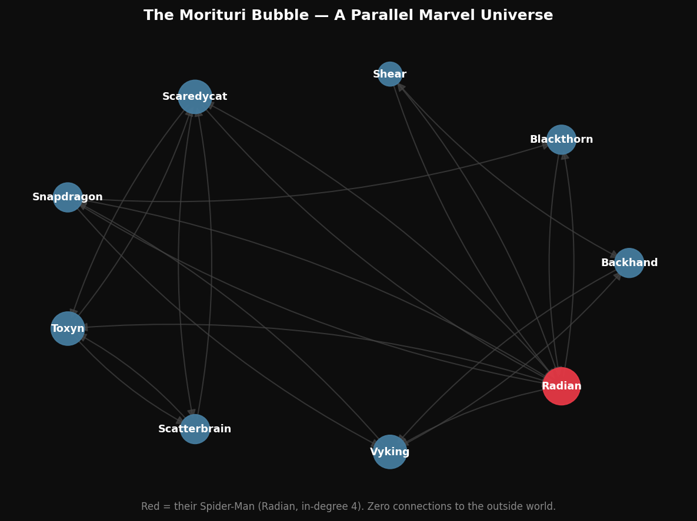

Main Character Syndrome in the Marvel Universe
Every character has two numbers: how many others link to them (fame), and how many they link to (reach). The gap between those two numbers tells you exactly where you stand in the Marvel hierarchy.
Two numbers, four archetypes
In-degree = how many other characters' Wikipedia articles link to you — your gravity, your fame.
Out-degree = how many other characters your article links to — your social reach, your engagement.
Split at the median (in ≥ 3, out ≥ 4) and every character falls into one of four archetypes:

Main Characters — the purest Main Character Syndrome
These 34 characters have massive in-degree relative to their out-degree. The universe constantly references them; their own Wikipedia articles barely mention anyone else. The extreme case is Ms. Marvel (in=11, out=1) and Quasar (in=24, out=3). Spider-Man's Main Character Score — in / (out + 1) — is 10.6. For every link he sends out, about ten others point back.

Main Character Syndrome — the Support Character Curse
These 48 characters link to many others but are rarely linked back. They appear in everyone's story and never get top billing. The most extreme cases are Shamrock (in=0, out=8) and Isaiah Bradley (in=0, out=7) — their Wikipedia articles reference 7–8 other Marvel characters, but not a single one ever references them back.
This asymmetry is invisible in an undirected network. You'd see degree 8 and think: connected character. Direction reveals the truth: they are doing all the work of connection while receiving none of the credit.
The Morituri Bubble
Nine characters form a completely separate connected component. They are all from The Morituri, a 1980s storyline. Inside their bubble, Radian is their Spider-Man (in-degree 4). Zero links cross into the 277-character giant. They are quarantined — not forgotten, but invisible.

Who Invited You — the Forgotten 17
Seventeen characters have degree zero: no links in, no links out. They exist in the Wikipedia category but are completely invisible in the network. Most surprising: Baymax, the robot companion from Big Hero 6 (over $650M at the box office), is as disconnected as Super Rabbit — a 1943 Bugs Bunny parody character. In network terms, fame in the real world means nothing here.
What happens when you delete Spider-Man?
The interactive below lets you remove the highest in-degree character from the network one at a time. Nodes that get stranded — cut off from the giant component — glow orange. Watch whether removing a celebrity actually breaks the network, or whether the Mutual Celebrities quietly hold everything together.